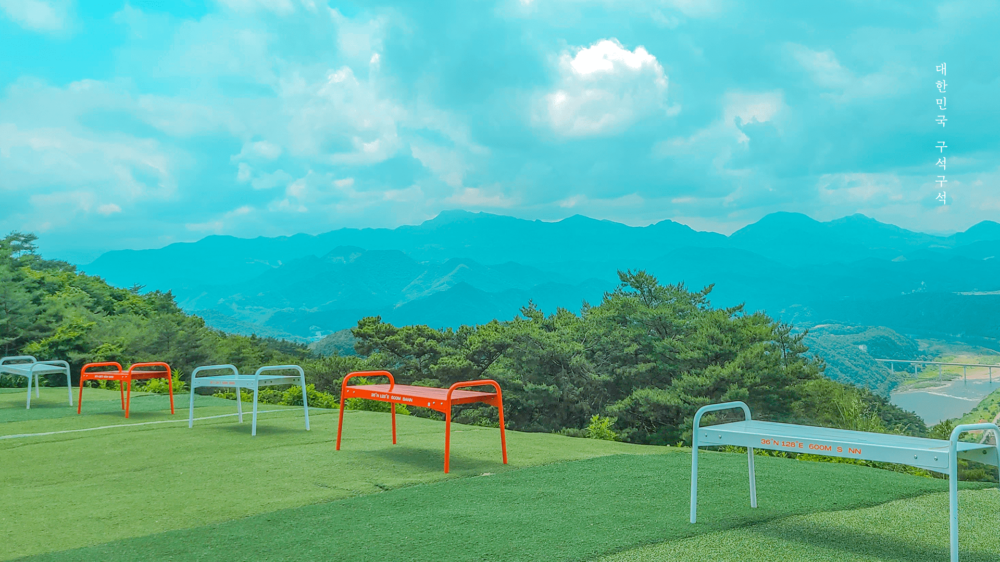

관광지 이름

이미지 설명
'대한민국 테마여행 10선'은 전국의 10개 권역을 대한민국 대표 관광지로 육성하기 위한 문화체육관광부의 국내 여행 활성화 사업입니다. 각 권역에 있는 3~4개 지방자치단체는 지역의 테마에 맞는 선진 문화 관광 콘텐츠 개발에 힘을 모으고 고품격 관광 코스로 국내외 관광객을 맞이합니다. 전 세계인의 겨울 축제인 2018평창동계올림픽이 열리는 2월, 강릉 평창 속초 정선으로 떠나는 ‘드라마틱 강원 여행’을 추천합니다. 우리나라를 대표하는 바다와 산, 호수를 아우르는 자연 속에 푸근히 자리한 네 도시에서 감동 넘치는 여행, 내가 주연인 행복한 여정을 만끽해 보세요.